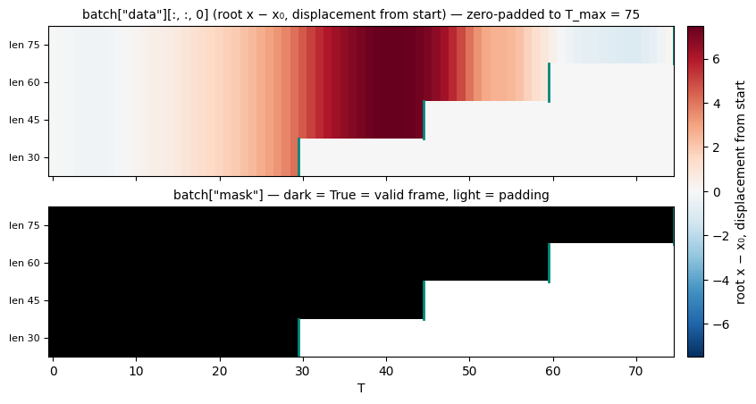
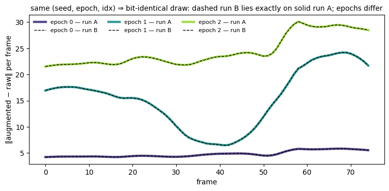

PyTorch Integration¶
Optional — install with pip install "pybvh-ml[torch]". The pybvh_ml.torch submodule provides two Dataset classes and a collate function; everything else in the library stays NumPy-only, so a broken or absent torch never blocks the core.
End to end¶
Preprocess → MotionDataset → DataLoader → training batch:
from pybvh_ml import preprocess_directory, load_preprocessed, AugmentationPipeline
from pybvh_ml.torch import MotionDataset, collate_motion_batch
from torch.utils.data import DataLoader
# 1. One-time preprocess (label_fn: map filename stem → integer class).
preprocess_directory("walks/", "train.npz", representation="6d",
label_fn=lambda stem: 0)
# 2. Build dataset + augmentation pipeline.
data = load_preprocessed("train.npz")
skel = data["skeleton_info"]
pipeline = AugmentationPipeline.standard(
skel, representation="6d", up_axis=skel["world_up"])
dataset = MotionDataset(
data["clips"], labels=data["labels"],
target_length=128, augmentation=pipeline,
seed=42, # reproducible — see the set_epoch contract below
)
# 3. Variable-length batching with padding and masks.
loader = DataLoader(dataset, batch_size=32, collate_fn=collate_motion_batch)
# 4. Training loop.
for epoch in range(num_epochs):
dataset.set_epoch(epoch) # fresh aug per epoch, reproducible across runs
for batch in loader:
data_tensor = batch["data"] # (B, T_max, D)
mask = batch["mask"] # (B, T_max) bool
lengths = batch["lengths"] # (B,)
labels = batch["labels"]
# model(data_tensor, mask) ...
The two Dataset classes¶
MotionDataset wraps in-memory clip dicts — typically load_preprocessed(...)["clips"], but any list of {"root_pos", "joint_rot", ...} dicts works (pass center_root=True for raw, uncentered hand-built clips). When the clips do come from a preprocessed file, MotionDataset.from_preprocessed(loaded) is the better entry point: it wires the labels, the stored filenames (as per-clip names), the stored representation and skeleton_info["euler_orders"] from the file, so nothing has to be restated at the call site.
OnTheFlyDataset skips the preprocessed file entirely: give it a list of BVH paths (str or Path) and it loads, converts, and augments per item — useful when you don't want the preprocessing artifact on disk. world_up= and lr_mapping= are forwarded to every pybvh.read_bvh_file call, matching preprocess_directory.
Both support Python negative indexing (ds[-1] matches ds[len(ds)-1] on the same rng stream) and raise IndexError cleanly out of range.
What __getitem__ returns, and what collate does¶
Each item is a dict with "data" — the (augmented, length-standardized) clip packed in the chosen layout — plus "length", and optionally "label" and "name".
name is the clip's identity, and you need it for anything that isn't a dataset-level mean: writing one output row per clip, routing a clip to the fold whose model never saw its performer, keying saved activations by file. MotionDataset reports it when built with names= (or via from_preprocessed, which reads the stored filenames); OnTheFlyDataset always reports it, since it has the paths. Both use the filename stem, so a clip carries the same name whether it came from a preprocessed file or straight from BVH. Omitted entirely when no names are available, rather than substituted with indices — so a downstream can tell "no identity provided" from a real name.
length means valid frames in the returned tensor. When target_length pads a shorter clip, length is the original frame count (the padded tail is not valid); when it crops a longer clip, length is target_length. If you need the original pre-crop length, recover it from your clip arrays before the dataset.
Shaping the clip: temporal and layout¶
target_length says how many frames; temporal says how to get there, and the choice is not cosmetic:
temporal |
Keeps | Use when |
|---|---|---|
"pad" (default) |
a window: truncate from the end, zero-pad if short | a fixed-duration window is the unit of prediction |
"crop" |
a window, taken from the centre | same, but the middle of the clip is the informative part |
"resample" |
the whole arc, at a fixed frame budget, with random per-segment offsets | training, when the shape of the entire clip carries the signal |
"resample_deterministic" |
the same arc, offsets pinned | evaluating the above — same frames every read |
Crop and pad keep a fixed window; the resample modes keep the whole arc of a clip at a fixed budget, sampling indices spread across its full duration (uniform_temporal_sample). For a clip whose meaning is its build-up → peak → decay, cropping throws away most of the signal. Both resample modes report length == target_length — every returned frame is real data, so there is nothing to mask.
layout picks the tensor shape: "flat" (T, D) (default), or the graph layouts "ctv" (C, T, V) and "tvc" (T, V, C) that GCN and skeleton-transformer models consume. MotionDataset also converts representations on the way out — source_repr / target_repr (plus euler_orders if either end is Euler) — so a dataset stored as Euler can train as 6D without a second preprocessing pass:
ds = MotionDataset.from_preprocessed( # source_repr comes from the file
loaded, target_repr="6d", layout="ctv",
temporal="resample", target_length=64, seed=0)
Choosing the streams¶
streams= picks what goes into the data tensor, with the same vocabulary and shape rules as pack_to_ctv. It defaults to ("root_pos", "joint_rot").
ds = MotionDataset.from_preprocessed(
loaded, layout="ctv", streams=("joint_pos",),
temporal="resample", target_length=64, seed=0)
ds[0]["data"].shape # (3, 64, J) — straight into ST-GCN
Still one data tensor with explicit streams, not a second tensor beside it, so the batch contract does not change with a preprocessing flag. from_preprocessed also threads the stored position_centering onto every MotionArrays it mints — the steps that depend on it only ever see the container — and raises when a requested stream is absent from the clips, naming include_positions=True.
OnTheFlyDataset needs its own extraction path, since it reads BVH files rather than preprocessed clips. It takes the same three settings directly:
ds = OnTheFlyDataset(
paths, representation=None, # positions only
include_positions=True, position_space="node",
position_centering="skeleton",
layout="ctv", streams=("node_pos",), target_length=64)
One FK pass per clip regardless of how many representations are requested — pybvh caches world-frame FK on the Bvh and invalidates it on motion writes.
collate_motion_batch stacks variable-length items into {"data", "mask", "lengths", "labels", "names"} with zero-padding to the batch maximum and a bool validity mask. names is a plain list of B strings in batch order — strings have no tensor form, and default_collate does the same, so a batch means the same thing under either collate. Either every item in a batch carries a label / name or none does — mixed presence raises a ValueError naming the offending index rather than silently dropping the field.
With layout="flat", always pass collate_fn=collate_motion_batch — PyTorch's default is not equivalent
A DataLoader without collate_fn uses torch.utils.data.default_collate, which behaves differently depending on your clip lengths. With variable-length clips it raises RuntimeError: stack expects each tensor to be equal size — it only stacks tensors that already share a shape, and padding them is exactly the work this collate does. That failure is loud and therefore harmless. The trap is fixed-length clips (target_length set): there default_collate succeeds and the data tensor is identical, but the keys stay singular (length / label, not lengths / labels) and there is no mask. Clips shorter than target_length are still zero-padded inside that tensor, so without the mask those padded frames reach your model looking exactly like real motion, and nothing raises.
The graph layouts invert this. collate_motion_batch pads a time-major axis 0, which (C, T, V) does not have — so it raises rather than masking along the channel axis. "ctv" / "tvc" are fixed-size by construction (they pair with target_length, and a resample mode leaves nothing to mask), so default_collate is the right choice there.

A four-clip batch: zero-padded data on top, the validity mask below. (Gallery for every figure.)
Reproducible per-epoch augmentation¶
When seed is set, the tuple (seed, epoch, idx) feeds a numpy.random.SeedSequence, so:
- two runs with the same seed produce the same augmentation trajectory,
- each epoch still sees a different draw,
- and the result is bit-identical regardless of
num_workersor shuffle order — the rng depends on the sample index, not on which worker processes it.
Call dataset.set_epoch(epoch) at the top of each epoch — the same contract as torch.utils.data.distributed.DistributedSampler. Forgetting it doesn't break anything: the dataset warns once and uses epoch 0 (every epoch replays the same augmentation draw).
With seed=None, every call uses fresh OS entropy — simplest, no reproducibility.
Under a training framework, set the epoch before the DataLoader starts its workers
Many trainers prefetch the first batches as soon as the loader is built, which is often before the hook you would naturally put set_epoch in — PyTorch Lightning's on_train_start is one such hook. Workers forked in that window carry the never-set state into their first batches, and each one emits its own "set_epoch() was never called" warning (the warn-once budget is per process, so num_workers=6 means six warnings).
Nothing is silently wrong when that happens: the unset state reads as epoch 0, which is what the hook sets a moment later, and the shared counter means workers observe every subsequent set_epoch. But a warning that fires on every run is a warning nobody reads, which is exactly how a real occurrence goes unnoticed. Claim the epoch in the earliest hook that runs before dataloaders are constructed — for Lightning, a Callback.setup.
dataset.epoch_is_set tells the two states apart, so an earlier hook can claim epoch 0 only if nothing else has (dataset.epoch reports the epoch itself, 0 when unset):
def setup(self, trainer, pl_module, stage): # runs before dataloaders
if stage == "fit" and not dataset.epoch_is_set:
dataset.set_epoch(0)
Both read the shared counter, so the answer is the same in every worker. A custom Dataset holding its own EpochState asks it directly — state.is_set. What does not work is a plain self._epoch_was_set = True flag beside the shared counter: it lives in whichever process wrote it and reads False in every forked worker.

The contract, drawn: run B (dashed) lies exactly on run A (solid) for every epoch; each epoch is a fresh draw.
Asking what happened to one sample¶
Seeded draws are replayable, so the dataset can answer after the fact: sample 5 in epoch 3 looked wrong — what did the augmentation do to it?
ds.explain_augmentation(5) # the current epoch
ds.explain_augmentation(5, epoch=0) # or an earlier one
# [{'name': 'rotate_vertical', 'applied': True, 'params': {'angle': 0.034}},
# {'name': 'mirror', 'applied': False, 'params': {}},
# {'name': 'add_joint_rotation_noise', 'applied': True, 'params': {}},
# {'name': 'speed_perturbation_arrays', 'applied': True, 'params': {'factor': 1.020}}]
Nothing is recorded during training and nothing rides along in your batches: the method re-runs that one sample's augmentation on the same (seed, epoch, idx) generator the loader used, which reproduces the loader's tensor bit for bit — so the records describe the draw that really ran. Records use the pipeline's return_params format.
On an unseeded dataset it raises, rather than answering. Without a seed there is no draw to recover, and a freshly drawn answer would be indistinguishable from a real one while describing an augmentation that never touched your data. For the same reason the replay is only truthful while its inputs are unchanged — same pipeline, same clip arrays (for OnTheFlyDataset, the same file on disk).
Using the seeding scheme in your own Dataset¶
The two pieces above are public, so a Dataset that isn't a MotionDataset subclass — one composing convert_arrays → pack_to_ctv → uniform_temporal_sample itself, say — can honor the same contract without reimplementing it:
from pybvh_ml.torch import EpochState, rng_for
class Feeder(torch.utils.data.Dataset):
def __init__(self, clips, seed=0):
self.clips, self.seed = clips, seed
self.epoch_state = EpochState()
def set_epoch(self, epoch):
self.epoch_state.set(epoch)
def __getitem__(self, idx):
rng = rng_for(self.seed, self.epoch_state.current, idx)
...
rng_for gives the order- and worker-independent stream; EpochState is the shared-memory counter that makes set_epoch reach workers. EpochState.current reads 0 until first set.
Why set_epoch works with worker processes (and what it costs)
DataLoader workers hold a copy of the dataset, created once — with persistent_workers=True, that copy lives for the whole training run, so a plain-attribute epoch would silently freeze at its startup value in every worker. The epoch therefore lives in shared memory (a multiprocessing.Value), which worker processes inherit at creation — fork and spawn both. One consequence, stated on both classes: dataset instances can't be deepcopy-ed or torch.save-ed directly, because shared state only travels to other processes via DataLoader worker inheritance. Save your model, not your dataset.
With multiprocessing_context="spawn", the whole dataset must be picklable
A spawn-started worker doesn't inherit memory — the DataLoader pickles the dataset to it. That reaches your augmentation pipeline, so the lambda rng: ... kwargs used throughout this documentation ("angle": lambda rng: rng.uniform(-np.pi, np.pi)) fail with Can't pickle local object. Move those callables to module level (a def at the top of your training script) when you use a spawn loader; the fork default is unaffected.
What pybvh-ml never touches¶
Precision, determinism, threading and seeding policy stays yours. Importing pybvh_ml or pybvh_ml.torch — and calling anything in them — never sets torch.set_float32_matmul_precision, use_deterministic_algorithms, set_default_dtype, set_num_threads, manual_seed or any torch.backends flag, and never touches np.seterr, np.random.seed, os.environ, warning filters or logging configuration. A data library that set those would change your model's numbers with nothing at any call site to point at it, and the effect would survive every layer you put between your training script and us.
Concretely: if you want TF32 on, deterministic algorithms, or a global torch seed, set them in your training script — they will still be exactly what you set after pybvh-ml is imported. Randomness in pybvh-ml is always something you hand in (seed= on the datasets, rng= on the augmentation functions), never something it installs. This is a stated design principle of the project, not an accident of the current implementation, and a test enforces it — so it holds for future versions too.
See also¶
- PyTorch API — full signatures for both classes and the collate function
- Runtime Augmentation — building the pipeline the datasets call
- Tutorial 1: End-to-end pipeline — this page as a runnable notebook, ending in a trained classifier